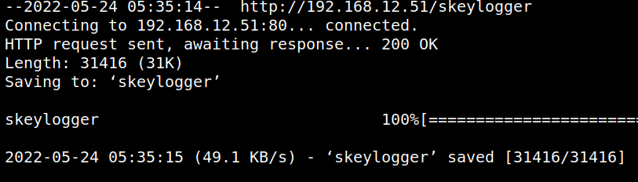
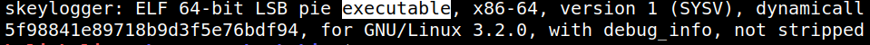
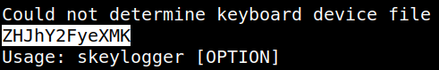

3.1 Analyzing "skeylogger" file
1. Download to your Kali Machine the “skeylogger” file.
$wget http://192.168.12.51/skeylogger
Output:

2. Check whether is an executable file or not.
$file skeylogger
Output:

It's executable.
3. Look for strings in the downloaded file.
$strings skeylogger
Output:

There's a strange string
ZHJhY2FyeXMK.4. Decode the string with “base64”.
$echo ZHJhY2FyeXMK | base64 -d
The string decoded is
dracarys.